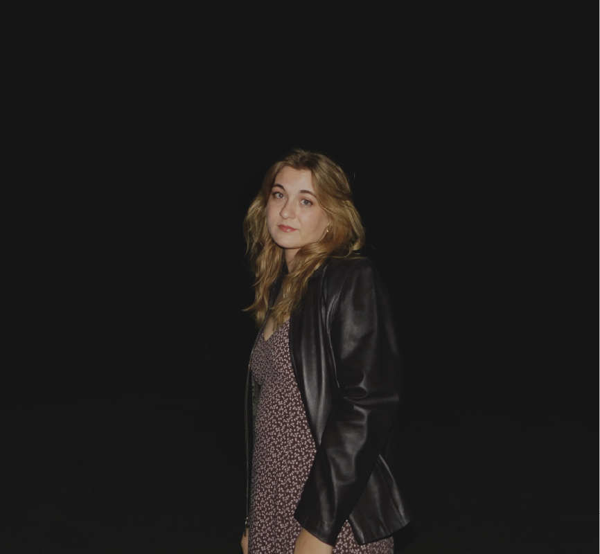

Julia Herndon
Digital Media Marketing Student
Creative and detail-oriented Digital Media Marketing student with hands-on experience in the food service industry. Skilled in Adobe Photoshop, Adobe Illustrator, website building, social media strategy, content creation, and photography.
Job Experience
Shift Manager at Panera Bread
Dates of Employment: March 2024 – January 2025
- Supervised a team of 10+ crew members, ensuring smooth operations and excellent customer service.
- Managed opening and closing shifts, including cash handling and inventory management.
- Trained new employees and provided ongoing coaching and feedback to improve performance.
- Handled customer complaints and resolved issues efficiently, ensuring customer satisfaction.
Crew Member at Chick-fil-A
Dates of Employment: January 2025 – Present
- Provided high-quality customer service in a fast-paced, high-volume environment.
- Maintained cleanliness and organization of dining and kitchen areas.
- Collaborated with team members to ensure timely food preparation and delivery.
- Demonstrated excellent communication skills and positive attitude towards customers and colleagues.
Part-Time Photographer
Dates of Employment: June 2019 – Present
- Provided photography services for various events including weddings, portraits, and local business shoots.
- Worked closely with clients to capture their vision, delivering high-quality images and editing them to perfection.
- Developed a strong portfolio and built a loyal client base through social media marketing and word of mouth.
- Expert in photo editing using Adobe Photoshop and Lightroom, enhancing photos for professional use.
Education
Seminole State College of Florida
Degree Program: Digital Media Marketing
Expected Graduation: December 2025
Special Skills
- Adobe Photoshop
- Adobe Illustrator
- Social Media Marketing
- Content Creation
- Website Building (HTML, CSS, WordPress)
- Brand Identity Creation
- Photography (Event, Portrait, Business)
- Photo Editing (Adobe Lightroom)
- Customer Service & Team Management
- Strong Communication & Problem-Solving